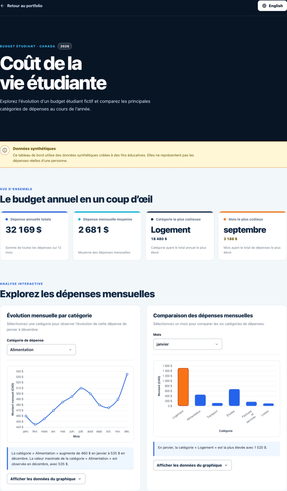

Project overview
This project transforms a synthetic dataset about student living costs in Canada into a clear, interactive and understandable interface. Users can first review four key indicators, then explore the data through two complementary visualizations.
The main objective was to design an experience that remains useful without relying exclusively on charts. Important values are therefore also communicated through written summaries and data tables accessible to keyboard and assistive technology users.
Problem
A long list of monthly expenses is difficult to compare quickly, especially when users need to identify trends and maximum values.
Solution
A progressive overview combining indicators, explicit filters, charts, dynamic observations and accessible data tables.
Outcome
A bilingual, responsive and accessible prototype that explains the data without requiring previous financial analysis knowledge.
Dashboard preview

Data at a glance
All values are synthetic and are used exclusively to demonstrate the prototype’s interactions.
12
Months analyzed
6
Expense categories
4
Calculated indicators
2
Available languages
Main interactions
Annual indicators
Four cards automatically calculate the annual total, monthly average, highest expense category and most expensive month. No result is manually hard-coded.
Category trend
A line chart lets users select a category and examine its values across twelve months, with localized axes, tooltips and summary.
Monthly comparison
A bar chart compares all six categories for a selected month. The highest expense is highlighted in orange and identified in the written observation.
UI / UX design decisions
- Hierarchy moving from the annual overview to detailed exploration.
- Controls placed before each chart to respect the reading order.
- Explicit labels instead of relying on icons or colours alone.
- Limited palette with stronger contrast for important information.
- Stable chart height to prevent unexpected content movement.
- Dynamic observations written in plain language.
- Progressive disclosure of tables through native
detailsandsummaryelements. - Immediately visible notice explaining the synthetic data.
- Localized numbers, month names and Canadian dollar amounts.
- No unnecessary 3D decoration or nonessential animation.
Accessibility and bilingual support
Keyboard navigation
A skip link, logical tab order, native controls and visible focus indicators support use without a mouse.
Chart alternatives
Each visualization has an accessible name, a dynamic observation and a table with a caption and semantic headers.
Complete localization
Switching languages updates the text, document title,
lang attribute, axes, tooltips and data tables.
- Support for
prefers-reduced-motion. - Styles provided for forced-colours mode.
- Interactive targets measuring at least 44 pixels.
- Important information communicated with text as well as colour.
- Tables scroll locally on smaller screens.
Responsive design
The layout adapts progressively instead of simply shrinking its elements. The four indicators move to two columns on tablets and one column on smaller screens. Charts move from two columns to one while maintaining a readable height.
The header, controls, tables and footer are also reorganized to prevent overlap and global horizontal scrolling at widths of 1440, 1024, 768, 390 and 320 pixels.
Technical architecture
React
Reusable components and local state limited to the interactions that require it.
Chart.js
Responsive charts with options, axes and tooltips recalculated for the active language.
JavaScript
Pure statistical functions and localized formatting through the browser’s internationalization API.
Vite
Fast development and a static build using relative paths for portfolio integration.
Final prototype
Explore all twelve months, compare the six categories and review the accessible data tables.